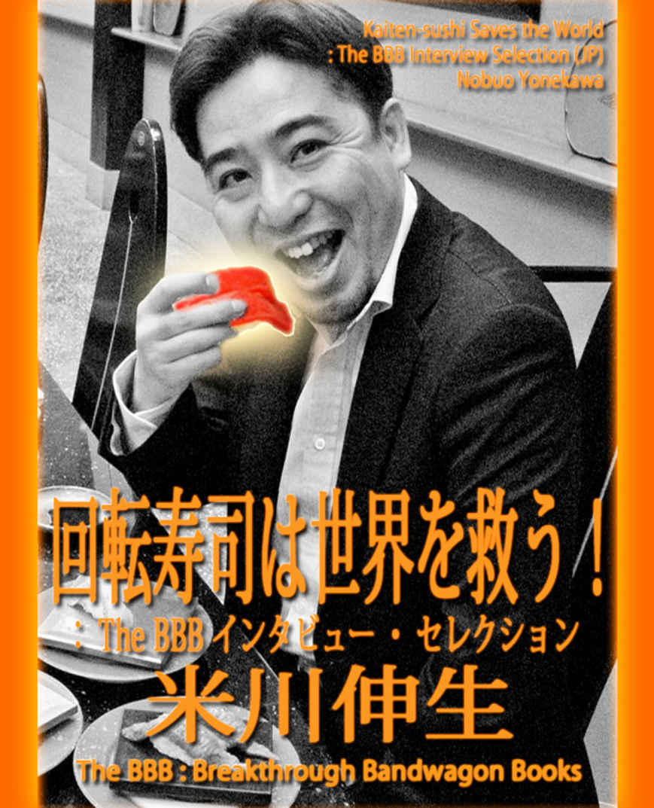
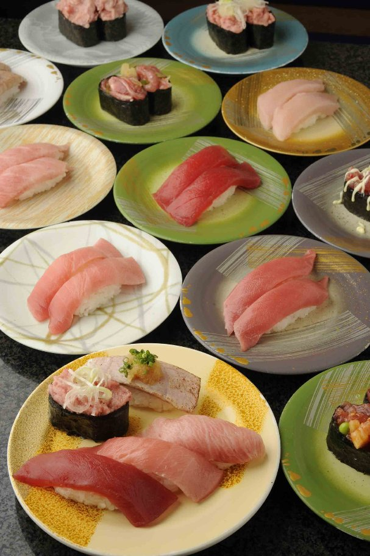
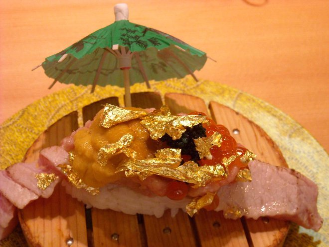
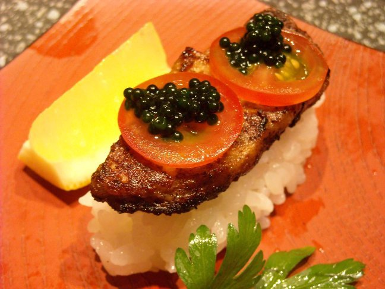
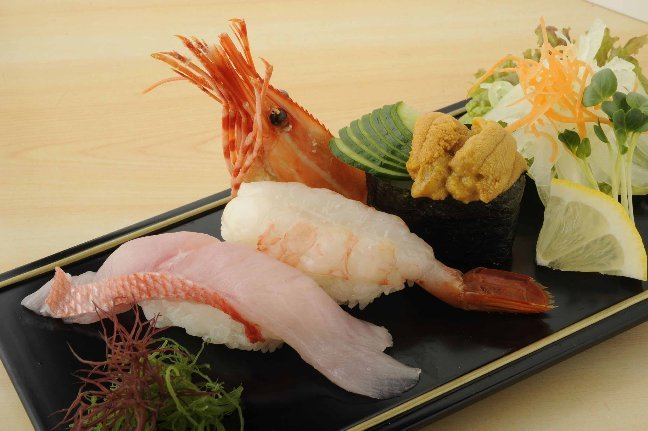
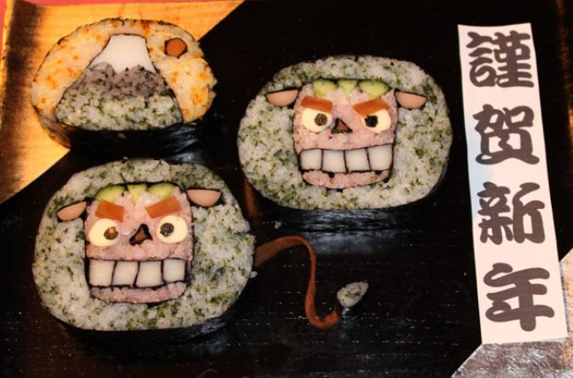
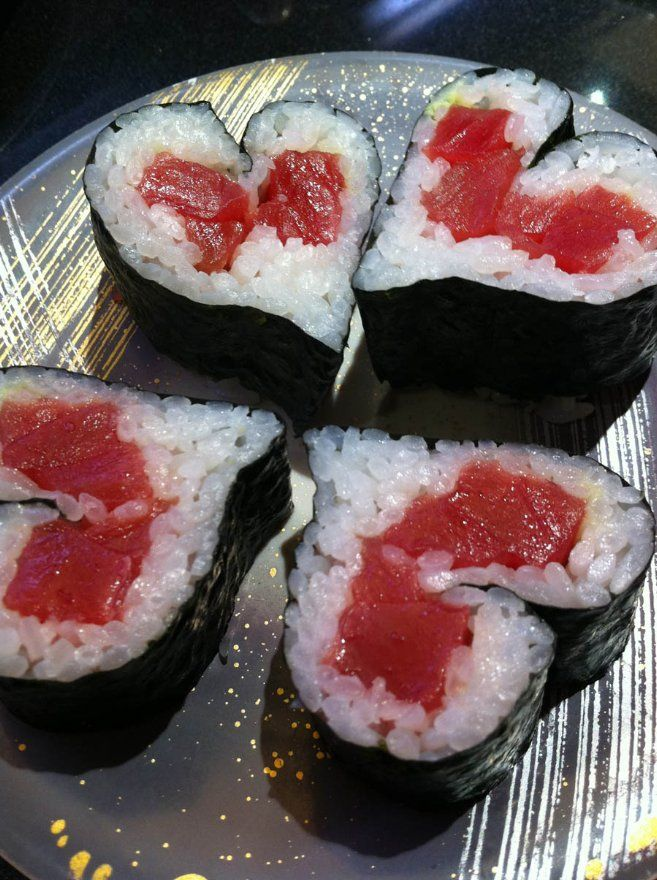
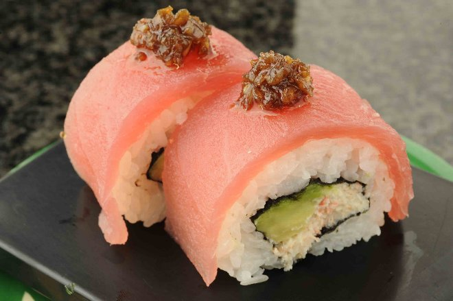
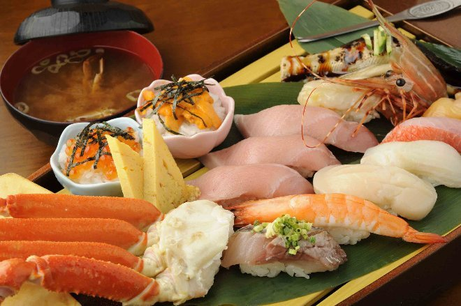
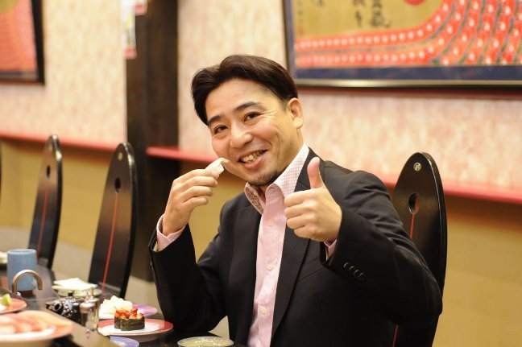

| 回転寿司は世界を救う！ (The BBB: Breakthrough Bandwagon Books) | |
| 米川伸生 | |
| The BBB: Breakthrough Bandwagon Books (2015) | |

（邦題『回転寿司は世界を救う！ : The BBB インタビュー・セレクション』）
T old in Japanese by Nobuo Yonekawa
Cover Photo by Nobuo Yonekawa
Cover design by Tanya
Copyright © 2013 Nobuo Yonekawa / The BBB : Breakthrough Bandwagon Books
All rights reserved.
ISBN 978-1-312-14544-3
(1. 米川伸生と回転寿司 )
米川伸生さんは回転寿司評論家、回転寿司コンサルタントとして、ご活躍されています。５歳の頃から回転寿司店に通い始め、国内外で食べ歩いた回転寿司店は、のべ 4,000 店以上。所有する寿司の写真は 350,000 枚を超えています。大学卒業後 は 、テレビの放送作家として多くの回転寿司特集企画を手がけ、 雑誌にも記事を発表されていました。 2007 年、 テレビ 番組 「 TV チャンピオン ２ 」 の回転寿司選手権で優勝し、 「キング・オブ・回転寿司」とし て不動の地位を築きます。 2010 年に日本 回転寿司協会を設立され、 2013 年 ９ 月には 「 回転寿司版ぐるナビ」サイトをオープンされる予定です 。

The BBB 編集部 ( 以下、 B): まず、このインタビューを読まれる世界中の読者に向けて、米川さんの自己紹介をお願いします。
Yonekawa : 日本だけでなく世界も含めて、これまでの人生で、のべ 4,000 店の 回転寿司店に行っています。海外に行った時には必ず現地の回転寿司店を見るようにしていて、その つど発見があり勉強にもなります。最近のおもな 仕事としては、回転寿司店のコンサル業務が非常に増えていまして。東京に限らず地方にも何店もクライアントがあるので、毎月１週間くらいは地方に出張していますね。
B: そのお仕事は、基本は立ち上げに関わられるだけですか？
Yonekawa : いや、ずっと見ますよ。外部顧問のような形で。
B: 具体的には、どのようなご活動なんでしょう？
Yonekawa : 売り上げ向上のための、あらゆるプランニングです。メニューづくり、キャンペーンづくり、人材育成なども手掛けますし......回転寿司というのは 、今 や単に寿司を提供する場所ではなく、総合レストラン的な意味合いが強いの です。そこで、お客様に気持ちよく食事をしていただくための空間づくり が重要なのです。
B: 地方ごとに作戦を変えられるんですか？
Yonekawa : 地方というより、お店の特色ごとに分けて、です。俺 は 回転寿司店はアミューズメントパークだと思っているんですね。回って いるコンベアはメリーゴーランド！そこにさまざま な ア トラクションがある。アミューズメントパークでもどのアトラクションから乗ろうかとあれこれ迷うのが楽しいように 、 回転寿司でもどの寿司から食べようか？と 、 回って いる寿司を見ながら考えるのが楽しいんですよ。たとえば、ディズニーランドや US J の ように巨大な店もあれば、小さな公園のような素朴な店もある。回って いる寿司も違うし、 お店の雰囲気も違う。だから、それぞれのお店の特色に合わせた店づくり が重要になるのです。
B: そう考えると、もはや回転寿司評論家というより、回転寿司コンサルタントですね。
Yonekawa : 回転寿司店が元気になってくれれば、俺は最高に幸せなんです 。 それと、 基本的には、やはり「回転寿司を広める」ことが、いちばんの仕事だと思っ ています。「いろんなメディアに回転寿司を紹介する」ことで 一般の 方たちの 興味を引き、お店に行ってみたいと思ってもらえること。それこそ俺がやるべきことだろう、と 。 だから、うちの会社の名前は 「回転寿司応援団」っていうんですよ（笑）。
B: テレビやラジオにも頻繁にご登場されて、日々、回転寿司を広められていますよね。
Yonekawa : 回転寿司は幅広い層に支持されており、今 や日本の国民食といってもいい存在だと思う のですが、不思議なことにラーメンや他の外食に比べるとネットでのクチ コミなども圧倒的に少なく、しっか り 評論する人もいないんですね。おそらく、まだ多くの方が「 どの回転寿司店もそれほど変わらない」と思っているためでしょう が、実はいろんなタイプの店があるんですよ、ということを広めたいんですね。それと日本の回転寿司の情報を海外に発信するために「回転寿司協会」というのを 2010 年に設立したのですが、そちらは結局、国内のつながりを充実させる方向にいってしまって、ちょっと残念に思っています。
B: 「 回転寿司版ぐるナビ 」 をご準備されている、とも伺いました。
Yonekawa : 2013 年 ９ 月末のオープンを目指しています。ちょうどその時期に回転寿司のガイドブックを ２ 冊同時刊行するので、それに合わせてオープンさせたいと思っています。全国の回転寿司情報を網羅していく予定です。

(2. 寿司の起源 )
B: 「寿司」というものについて考える時に、米川さんのご著書によると、大昔には、寿司の起源と言われる「なれずし」というものがあったんですか？
Yonekawa : 「なれずし」が誕生したのは、紀元前４世紀の東南アジアなんですよ。東南アジアから中国に来て、それで日本に伝わったものなんです。つまり、寿司の本当の起源を辿ると、実は、日本ではないんです。ただ、現代、世界中で寿司として普及しているのは、江戸時代後期に確立された日本の寿司がルーツです。「なれずし」は、東南アジアですら現在では食べられていないですから。今、「なれずし」の名残があるのは日本の鮒（ふな）寿司くらいで、いわば郷土料理のようなものです。「なれずし」というのは、発酵させるために米を使っているんです。でも、かつては米は食べないで、発酵させて魚だけを食べていたんです。つまり、「なれずし」というのは元々、塩づけの魚を米で挟むことによって、発酵させて日持ちさせるためのものなんです。だから、実際に食べる時は、昔は米をぜんぶ落として、魚の肉だけ食べていました。寿司というより、一種の発酵食品ですね。米も食べるようになったのは、奈良時 代からなんです。奈良時代に「米を捨てるなんて、もったい ない 」 と言って、食べた人がいた。そしたら、美味しかったんでしょうね。麻詰めにして、「はやずし」として寿司を食べるようになったのが奈良時代で。シャリと魚で食べる形としては、奈良時代の日本が、世界でいちばん最初です。
B: その形を踏襲しているのが、現在の鮒寿司とか鯖（さば）寿司になるんですか。近畿地方に多いですよね。
Yonekawa : 「なれずし」というのは、最初は宮廷への献上品だったんですよ。一般の人は食べることができなかったんです。だから、（朝廷のあった）奈良など近畿地方で今も多く見られるんです。
B: その後、関西から九州にまで伝わったのでしょうか？ 九州（関西）のほうでは、押し寿司じゃないですか。で、江戸時代には、いわゆる「江戸前」として、江戸で小さい寿司が考案された、という理解でよろしいでしょうか？
Yonekawa : そう、寿司の誕生は奈良がメインで、保存食用の寿司としての文化があって。そこに、関西の押し寿司っていうのが、実は、まったく同じ原理で。単に浸ける時間を浅くしたものなんですよ。「なれずし」から「はやずし」になって、それがさらに、バッテラ とかの関西風になって。どんどん魚と発酵させる時間が短くなって ね 。で、江戸時代になって、すぐ食べるようになったんです。 それが現在ある寿司、「江戸前」です。

(3. 回転スシか回転ズシか )
B: 続いて、回転寿司の英語表記についても、お聞きしたいと思います。回転寿司の英語名としては、 conveyer-belt sushi 、 sushi-go-round 、 rotary sushi 、 sushi train 、 revolving sushi ......などいろいろあって統一されていないんですが、米川さんの中で、これがいちばん適切だろうとか、あるいは、これをいちばん広めたい、という英語名はありますか？
Yonekawa : Conveyer-belt sushi は夢がなくて、工場みたいで嫌なんですよ。 Rotary sushi も文化の匂いを感じない。 Sushi-train は、実際にオーストラリアにそういう店があります。好みを言うと、消去法で、 sushi-go-round か、 revolving sushi しかないという。 Sushi circuit なんかも、名前としては面白いかもしれないな 。
B: 米川さんの把握されている範囲で、海外では「回転寿司」という名称で通じます？
Yonekawa : 海外でも、「回転寿司」という名称を使っているお店も多いので、そのまま世界語になって欲しいな、という気持ちはあります。カラオケという日本語が世界語になったようにね。
B: 世界語として普及させるなら、回転ズシと回転スシのどちらが良いですか？
Yonekawa : それは、回転スシですよ。ズシだと、なんかスシじゃないみたいですし。

( 4. 寿司と回転寿司の違い )
B: そもそも回転寿司と回らない寿司は、どう違うのか、という点も、海外の読者はピンと来ない方が多いかもしれませんね。回転寿司の特徴としては、まずベルトコンベアに載せている点が挙げられますよね。寿司屋は「客」を選ぶが、回転寿司は「お客様」を選ばない。寿司店は時に法外な料金を請求するが、回転寿司は明朗会計。また、回転寿司は職人＋ロボットがつくるという点が指摘できますよね。
Yonekawa : あと、寿司は高級店ではおまかせスタイルがメインで、出されたものを食べるしかないけど、回転寿司は選ぶ権利がある。食べる側が選べるって、なかなかないと思うんですよ。ふつうは、出されたものを食べるしかないわけで。客の優位性が高いんです。回転寿司は、自分自身で食べることを管理できるという。回転寿司は、寿司という大きなカテゴリーの中に入るけど、寿司とはまったく別の文化だよと。かつては、回転寿司は寿司に劣る扱いだったけど、もうそうじゃないだろうと。 特に 海外から来られた 方などが 寿司の注文方法がわからなくても 、回転寿司なら回ってきた寿司を自分の目で見て選ぶことができるので、日本語が話せなくても寿司を楽しめるわけです 。
B: 米川さんは、回らないほうの寿司屋については、どのようにお考えですか？
Yonekawa : オフになったら寿司屋に行って、酒飲みながらつまんでますよ（笑）。回転寿司は探究心とか、いろんな発見を求めていきますが、寿司屋には 、 くつろぎとか癒しとかを求めているかもしれないですね。やはり、職人技には感服します。寿司屋で見た寿司を回転寿司に応用させたりとか。逆もあるし、どっちも進化して欲しいんですけど。
B: 寿司と回転寿司は、どのような役割分担が考えられるでしょう？
Yonekawa : 寿司に関しては、伝統的な技法、食材の扱い方などは、本当に素晴らしい。回転寿司でも職人の技法を学びつつ、さらに誰もが気軽にふれあえる親しみやすさを追求していっていただきたいと思っています。
B: 海外の方が寿司と回転寿司の違いについて、質問してきたら、どう答えられます？
Yonekawa : 寿司屋にもタイプがあって、それは知っておいてソンはないでしょう。たとえば、江戸前の「数寄屋橋次郎」さんのように、よっぽどの常連でないと酒を飲むことが許されない店があるわけです。３万円払って 30 分で帰ったりとか。
B: そういう知識は、海外の方にも教えてあげたいですよね。
Yonekawa : 「数寄屋橋次郎」さんはミシュランで星２つもらってるから、海外からも当然、来ますよね。で、酒 が飲めないとわかったら 驚愕するでしょう 。注文しても、酒は出て来ないですからね。
B: 寿司は、そのくらい得体の知れない奥深さがあって、ある意味では、化け物のような 存在なわけですね。
Yonekawa : 寿司屋とい うのは、大将の権限が強すぎて「俺の店ではこうだ」と言ったら、そう なんですよ。客がこうしたいと思っても、そんなことは許されない特殊な世界で。

(5. 回転寿司の想い出 )
B: 米川さんの回転寿司の原体験とは、どのようなものでしたか？
Yonekawa : いちばん初めに回転寿司に行ったのは、５歳の時なんです。祖母が池袋に住んでいたんですが、池袋に初めて回転寿司店ができたんですよ。
B: 米川さんが５歳の 1971 年当時だと、まだ回転寿司は珍しかったんじゃないですか？
Yonekawa : その前に、関東では埼玉に１軒できてて、たぶん、２号店か３号店が池袋だったんです 。で、５歳で祖母に連れていってもらったら「面白い」となって。 好きになって。 おばあちゃんの家に行くたびに、いつもその「元禄寿司」に。 で、他にも、五反田とか御徒町とかに、ぽつぽつと「元禄寿司」ができて。外食する時は、デパートでお子様ランチを食べて（ライスに立てられた）いろんな国旗を集めるか、「元禄寿司」で寿司を食べるかの２択だったわけです。で、７対３くらいの割合で元禄寿司に行っていたわけです。幼少期の外食は、元禄寿司かデパートの食堂しかないんです。他は、いっさい行っていません。日本橋の三越か玉川の高島屋かどっちかでね。
B: 当時は、ファミレスも少なかったんですよね？
Yonekawa : まだ珍しかった時代ですね。ファミレスの登場も 70 年代からなんで。
B: 回転寿司って、そんな昔からあったんですね。
Yonekawa : そうそう、 1958 年にできて。 1970 年の大阪万博で全国的に広まって、 1971 年には、もう東京に来てるんです。
B: その５歳の時に行かれたお店というのは、どんな感じでした？
Yonekawa : 当時は時代の最先端、という感じで、ただただ驚きました。寿司が回っているというだけで、 ５歳の 子どもにとっては、もうドリームランドなわけです（笑）。昔は、上に、お茶が流れるダクトがついてくるんです。で、子どもだから見えなくて、何度かヤケドしそうになった記憶があります。今は、粉茶をお湯にとくけど、昔は、お茶そのものがダクトを流れていて。だから、異様に濃かったり薄かったりね。
B: 当時、印象に残っているエピソードなどありますか？
Yonekawa : ほんとに職人がひどくて、土日に行くと、ラジオで競馬中継を聞いているんですよ。で、職人が赤鉛筆を手に競馬新聞を読みながら、タバコを喫いながら、寿司を握ってたんですよ。ある日、ふと気がつくと、急にレーンの周りに皿が高く積み重ねられて、中が見えなくなったんですよ。中の職人の様子が 客席からはよく見えないんですね。それが、ずっと長く続いたんです 。あとで知った んですけど、なんで中を見えなくしたかと言ったら、そういうだらし ない職人が多くて、寿司を握ってる姿をとてもお客様に見せられない、ってことだったらしいです。職人も客の目を意識 しなくて済むので、ひたすら寿司を握ることに没頭できたそうです。俺 が子供の頃は回転寿司がサラリーマンにもの凄く支持されていて、いまの何倍も売上があったんですよ。とにかく忙しくて、職人たちは握りマシンに徹しないと客を捌けなかったんです。
B: それは、米川さんが何歳から何歳ごろですか？
Yonekawa : それは 10 歳（ 1976 年）から、たぶん、 22 歳（ 1988 年）ごろまで。
B: ５歳の時から外食していたのが回転寿司というのは、運命的ですね。
Yonekawa : 小学５年の時、五反田に引っ越したんです。そしたら、そこに「元禄寿司」がオープンしたんです。今まで、おばあちゃんの家に行かないと行けなかったものが、日常的に回転寿司に行けるようになったんです。それも大きかったです。
B: どのくらいの頻度で通われていました？
Yonekawa : おばあちゃんの家は月に１回だったのが、近所なので、週１回は通うようになりましたね。
B: 当時から、「元禄寿司」は家族連れで賑わっていましたか？
Yonekawa : 昔は、職人がそういうひどいところでも、家族連れが多かったんです。だって、当時、「寿司が回ってる」という のは夢のシステムで。で、それ以来、 俺 はハタチで家を出て、それから引っ越しを９回したんですけど、すべて引っ越し先の近くに回転寿司店がありますから。
B: 意識して、そういう場所を選ばれたんですか？
Yonekawa : もちろん。当時はね、回転寿司店でビールを飲みながらマンガを読むのが、すごい好きだったんです。自分で読みたいマンガを持って行ってね。カニサラダのカニをつまみに一杯やるのが凄い好きで。昔の回転寿司って、今ほど混んでないから、文句も言われないわけで。回転寿司で、お酒を飲んでマンガを読みながら、というのが最高の憩いでしたね。

(6. 放送作家として )
Yonekawa : 大学時代、けっこうヒマだったんで、車で全国をグルグル回っていたんです。年に２回くらい。春休みと夏休みとかに。今回は東北・北海道の旅、今回は中部、今回は九州、とか。で、行くたびに、地元の回転寿司も、いろいろ行って。それで、全国の回転寿司にくわしくなりました。実は、高校生の時から男性誌とかに原稿を書いていたんです。今の高校生のトレンドは何、みたいなね。本当は純文学志望だったんですけどね（笑）。で、大学時代に有名 放送 作家の事務所でバイトしてて、そのまま卒業後に自分もライター兼放送作家になりました。そうしたら、回転寿司ブームみたいなのが来たわけです。 1992 年くらいから。で、テレビ局の関係者から「米川、回転寿司、好きなんだって？」と言われて。ああ、よく知ってますよ、と。じゃあ、番組、考えてよ、と言われて。それから回転寿司関連のテレビ番組は、ほとんど担当していました。当時、インターネットが出始めた時期で、まだラーメンしか情報がなかったんです。回転寿司の情報は限りなくゼロに近かったから、自分でお店に行くしかなかった。で、元々、好きだったんで、ヒマを見て、いろんな回転寿司店に行って、いろいろ回ってたら、気がついたら、自分でも驚くほど知識が増えていたんです（笑）。
B: 放送作家になられたのと回転寿司ブームは、どちらが先ですか？
Yonekawa : 回転寿司ブームは、後なんですよ。回転寿司の暗黒時代というのがあって。 1988 年に、歌舞伎町中学生殺人事件というのがあって、それから繁華街が勢いを失ってしまったんです。ディスコも含めて。それで、回転寿司もまったく人気がなかったんです。そもそも当時は日本経済がバブルの絶頂期で、バブルの時代 に回転寿司を食うバカはいないんですよ。みんな、お金持ってるから。 そもそも回転寿司というのは誕生してから 20 年間は「元禄寿司」という店しか存在しなかったんですね。この店がレーンの特許を持っていたので、回転寿司店を経営したければ、ここ の FC （フランチャイズ） に加盟するしかなかったんです。そしてこの「元禄寿司」というのは、全皿 100 円均一価格で提供していたので、回転寿司＝ 100 円寿司だったんです。なので、なかなか美味な素材を使うことが出来なかったんですね。そのため世間からは「安かろ う悪かろう」というように言われてしまい、バブルの時には置き去りにされてしまったんです。 ところが、 1992 年くらいから、グルメ系回転寿司ができ始めて。 100 円寿司には、誰も見向きもしない時代に、回転寿司で 300 円、 400 円するけど、美味しいネタを食べさせますよ、って店が 1990 年代に初めて出てきて。それで、回転寿司の情勢がガラッと変わって。 で、次に来たのがデカネタブームで、それにテレビが飛びついて。いろんな番組で、回転寿司特集をやり出したんです。それらは、ほとんど俺が手がけていました。それから回転寿司が息を吹き返して、創作寿司ブーム、あぶり寿司ブーム......と、いろんなブームが次々にできていったんです。そんな感じで、ずっとマスコミで回転寿司の仕事に関わっていますね。昔は完全に裏方だったけど、最近は自分が宣伝もしてね。当時のディレクターが、今は出世してプロデューサーになっていたりすることもあって。
B: そう考えると、米川さんは回転寿司の歴史の生き証人であり、まさに " 回転寿司の神様 " に愛された男ですね。
Yonekawa : やっぱり、自分の足で全国の回転寿司を食べ続けていた、ってのが最大の武器になりましたね。
B: ラーメンの食べ歩きは多いですけど、回転寿司というのは珍しいですよね。
Yonekawa : 回転寿司って、店によって違いがあるなんて、誰も思っていないから。でも、違う。店によって凄い個性があって、出される物も、ぜんぜん違うし。いろんな楽しさがありますよ、ということを広めたいわけです。

(7. 回転寿司の今後 )
B: 米川さんの将来の夢として、今後、回転寿司文化を、どのように発展させていきたいですか？
Yonekawa : まず、ひとつは、寿司はローカルに特化すべきだと思ってるんです。ブラジルにはブラジルの寿司がある。チェコにはチェコの寿司がある。イタリアにはイタリアの寿司がある。そんな感じで、ローカルで発展して欲しいんです。ただ、ローカルで発展していくには、ベースも必要になります。日本国内にも関東風や関西風があるように、地区ごとの特色を活かした寿司が最大にうまいわけです。メキシコに行ったら、フルーツで寿司を巻いたりもするわけです。ソースがハラペーニョだったりね。で、ベルギーに行ったら、漬けマグロが、黒ビールに漬けてあるんです。スイスに行ったら、ブルーベリーソースをドバッと寿司にかけたり。つまり、その地方地方によって、独自の文化と融合した寿司が出てくるわけです。日本で発祥した寿司という文化が、そうやって世界と交わることで、どんどん進化していってもらいたいんです。そのためにも、ローカルで寿司が発展していくためのベースがどういうものなのか、ということを知ってもらえればいいかな、と。だから俺は、今の日本のスタイルの回転寿司が世界に普及してもらいたい、とは思っていないわけです。どんどんローカルで進化して欲しくて、その進化のベースが日本の回転寿司であればいいかなと。
B: 将来的には、名称は「回転寿司」だけれど、ぜんぜん違うものが「回転寿司」として世界に広がっているかもしれないと。
Yonekawa : 回転寿司というものは、ひとり 歩きしてくれて結構だと思っています。
B: カラオケなんて、まさにそうですよね。
Yonekawa : 結局、世界で流行るためには、地元の文化とリンクしない限り無理なんですよ。そのリンクがどんな風になるのかは、逆に楽しみですよね。ローカルの文化といかに交わっていくかで。世界では寿司はローカルなもので、日本発 だ とか江戸前というのは形骸化しているわけで。実際、静岡空港がオープンする時に、世界寿司博覧会というのがあったんですよ。俺も審査員で参加したんですけど。その時に、メキシコとかヨーロッパから来る寿司職人のレベルが高すぎて、ビックリしたんです。寿司をソースで食べさせたりね。フレンチやイタリアンのソースと組み合わせるために寿司をどう工夫するか、そこは、お国柄が出るんですよ。どの国に行っても、その国の文化と交われる、っていうのが寿司のいいところでね。
B: 100 年後には、世界中で、さまざまな回転寿司が存在してそうですね。
Yonekawa : 俺は、それでいいと思うんですよ。
B: では、日本の回転寿司を、こう発展させたい、というヴィジョンはありますか？
Yonekawa : 大事なことは、「食事をする場から抜け出せ」ということです。単に食事をする場所だと、いくら美味しいネタを出しても、そんなことでは、お客様は振り向いてくださらない時代だと。そこに行くと、どんな楽しいことがあるのか、という魅力が伝わらないと、もう無理です。昔は、回転寿司のライバルは回転寿司だったけど、今は違います。牛丼屋やカレー屋と安さだけで競っても意味がないわけで。もっと個性化して、もっとエンターテインメント化していかないとね。
B: 米川さんがコンサルされる時には、具体的には、どのように助言されるんですか？
Yonekawa : たとえば、「名物をつくろう」と。名物ってなにかと言ったら、その店にしかないもの。回転寿司のエンターテインメントとし ては、マグロの解体ショウがいちばん有名だけど、ただ、それは、ひとり がやるものでね。そうじゃなくて、みんなで見せなきゃ、と。たとえば、注文が入ったら、みんなで楽器を持って盛り上げるとかね。そうすると、それは集団パフォーマンスで、劇場型エンターテインメントになるわけです。「あそこに行くと、なんか面白いね」と言われる店になりなさい、と。
B: そうした企画で、なにか成功例などはありますか？
Yonekawa : たとえば、 「 極（ごく）盛り 」というメニューをつくらせたり 。職人が器にイクラをどんどん注いでいくんです。まわりの職人は笛とか太鼓で「ワッショイ、ワッショイ」と、かけ声を出して。そうすると、もうエンターテインメント空間になるわけです。
B: おおーっ、それは面白い（笑）。
Yonekawa : 今まで職人発だったものが、お客様も巻き込んで、劇場型のエンターテインメントを目ざして欲しいんです。あと、デート系回転寿司というのもあって、不思議なことに、夜８時くらいに回転寿司店に行くと、カップルが８割なんですよね。そのうちほとんどが大学生で。今は、回転寿司が人気デートスポットのベスト５に入ってるんです。俺にとっても、カルチャーショックでしたね。大学生にとって回転寿司ってのは、そんなにお金がかからずにデートできて、女の子に喜んでもらえるスポットになってる、ってことでしょ。いい時代だよね（笑）。 回転寿司のグレードも、それだけ向上したわけでね 。

(8. 世界の読者へ )
B: 最後の締めとして、日本の回転寿司の代表者として、これを読まれる海外読者にお伝えしたいメッセージはありますか？
Yonekawa : 俺はね、回転寿司から、たった ひとつ 学ぶことがあるんです。お寿司って、自分たちの生まれ育った環境であるとか、文化を、すべて吸収してくれるんです。すべて交わってくれて、「あなたにとって、いちばん美味しい寿司」になると。それができるのは、寿司ではなく、回転寿司なんですよ。ローカルに根ざした寿司というのは、回転寿司以外にない。それくらい回転寿司というのは、フレキシブルで自由度が高くて、しかも普遍性があり、いろんなものに対して、相性が、めちゃめちゃいい。あなたの国の文化とすぐに融合できるのが回転寿司ですよ、と。それをまず知ってもらいたい。必ずあなたがお気に入りのお寿司が見つかりますから。イタリアの方ならピザ寿司とか。
B: なぜ、回転寿司は、ここまでの自由度を獲得したんだと思います？
Yonekawa : それはね、回転寿司というのは、お客様に喜んでもらえる業態であり続けるしか、進化がなかったからなんです。つまり、江戸前というのは、歌舞伎とか、能・狂言と一緒で、文化を継承する食べ物なんです。回転寿司というのは、もっと単純で、お客様に喜んでもらい続けるしかない食べ物だから。能・狂言も、現代では、一部のリッチ層だけが観に行く文化になってしまったでしょ。下々は歌舞伎を観に行く機会なんてないわけですよ。寿司も昔は一部の上流階級しか行けなかったものでしたが、それを大衆に広めたのが回転寿司なんです。伝統文化を継承する人も必要だけど、大衆に広める人も必要でしょう、ということですよね。
B: 本日は、貴重なお話の数々を、ありがとうございました。
Yonekawa : こちらこそ、ありがとうございました。
( 2013 年 1 月 28 日、東京都内某所の回転寿司店で収録 )

( このインタビューは、 The BBB: Breakthrough Bandwagon Books のために語られたオリジナル作品です )